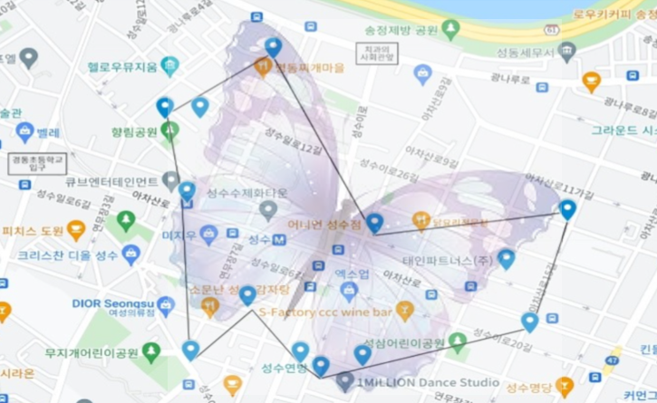

♻️ 소비와 윤리 지도 프로젝트 ✅

| 🦋 나비 루트 🦋 3.0km (성수동) |
|
|---|---|
| 1. 혜하우스 🏁 서울특별시 성동구 성수이로7길 30 5층 |
6. 어니언 성수점 서울 성동구 아차산로9길 |
| 2. 성수동 수제화 거리 서울 성동구 연무장7길 15 삼한창고 |
7. 그린워커스 서울특별시 성동구 성수2가3동 성수이로26길 47 |
| 3. 밀리언 아카이브 서울 성동구 아차산로5길 24-18 |
8. 마켓인유 서울특별시 성동구 아차산로 166 |
| 4. 인라이튼 서울특별시 성동구 아차산로5길 24-37 |
9. 성수 연방 서울특별시 성동구 성수이로14길 14 |
| 5. 원점 서울 성동구 아차산로7길 42 1층 101호 |
10. 대림창고 서울 성동구 성수이로 78 |
| 11. 쿠나장롱 🛑 서울특별시 성동구 연무장7가길 7 2층 |
| 상점명 | 판매 상품 | 윤리적 소비 |
|---|---|---|
| 1. 혜하우스 | 옷, 전구, 책상, 의자 등 가구, 주방 용품, 생활 용품 | 친환경 제품, 빈티지샵 |
| 2. 성수동 수제화 거리 | 수제 신발, 빈티지 소품, 카페, 음식점 | 친환경 제품 |
| 3. 밀리언 아카이브 | 원피스, 블라우스, 아메카지, 티셔츠 등 특정 품목의 빈티지 옷 | 빈티지샵 |
| 4. 인라이튼 | 제품의 배터리 교체 및 수리를 하는 전문 A/S 센터 | 업사이클링, 재활용 |
| 5. 원점 | 플라스틱 스마트폰 케이스, 벽걸이 시계, 리필스테이션 | 친환경 제품, 업사이클링 |
| 6. 어니언 성수점 | 카페, 디저트 | 수익금 소상공액 기부, 친환경 프로젝트 (비건 제품, 지속가능 농장) |
| 7. 그린워커스 | 플라스틱 병뚜껑 수거, 리워드 지급 | 업사이클링 |
| 8. 마켓인유 | 하와이안 셔츠, 반바지, 반팔티, 자켓, 코트 등 일반 의류 | 빈티지샵 |
| 9. 성수 연방 | 복합문화공간 | 재생공간 (공장 개조) |
| 10. 대림창고 | 갤러리카페 | 재생 공간 (공장 개조) |
| 11. 쿠나장롱 | 전세계 유수 뮤지엄과 갤러리에서 공식 수입한 포스터, 빈티지 포스터 판매 | 빈티지샵 |

| 🐘 코끼리 루트 🐘 2.6km (연남동, 홍대) |
|---|
| 1. 유민얼랏 🏁 서울특별시 마포구 연남동 487-342 |
| 2. 지구샵 제로웨이스트홈 서울특별시 마포구 성미산로 155 1층 |
| 3. 얼스어스 연남점 서울특별시 마포구 성미산로 150 |
| 4. 플랜트 연남점 서울특별시 마포구 월드컵북로4길 87 |
| 5. today’s vintage 서울특별시 마포구 서교동 339-1 1층,2층 |
| 6. 홍대 빈티지 서울특별시 마포구 홍익로 10 |
| 7. 프라이탁 서울 스토어 by June 🛑 서울특별시 마포구 독막로 7길 48 |
| 상점명 | 판매 상품 | 윤리적 소비 |
|---|---|---|
| 1. 유민얼랏 | 대나무칫솔, 재활용 빨대, 삼베 주머니, 주방용품, 욕실욕품 등 | 친환경 제품, 제로웨이스트 |
| 2. 지구샵 제로웨이스트홈 | 세제 리필스테이션, 가정용품(샴푸, 치약 등), 베이커리, 비건빵 | 친환경 제품, 제로웨이스트, 비건 |
| 3. 얼스어스 연남점 | 카페라떼, 아인슈페너, 케이크 등 | 제로웨이스트 |
| 4. 플랜트 연남점 | 두부 시저랩, 후무스 샐러드, 머쉬룸 버거, 필리치즈스테이크 샌드위치, 비건 디저트, 비건 케이크 | 비건 |
| 5. today’s vintage | 명품 빈티지 품목을 취급해 정품만을 판매, 보증 / 바지, 여성의류, 액세서리 | 빈티지샵 |
| 6. 홍대 빈티지 | 폴로셔츠, 퍼, 빈티지바지, 치마, 패딩 등 구제의류 | 빈티지샵 |
| 7. 프라이탁 서울 스토어 by June | 가방(라씨, 덱스터), 필통, 에코백, 파우치, 지갑 등 | 친환경 제품, 업사이클링 |

| 🐍 뱀 루트 🐍 2.8km (서울역, 을지로) |
|---|
| 1. 알맹상점 리스테이션 🏁 서울특별시 중구 한강대로 405, 서울역 4층 야외주차장 옥상정원) 나무건물 |
| 2. 레디투웰컴니스 서울특별시 중구 퇴계로2길 9-8, 4층 |
| 3. 마인띵스 서울특별시 중구 저동2가 47-1 |
| 4. 제로띵스 서울특별시 중구 수표로 32-13층 |
| 5. 조각모음 서울특별시 중구 을지로 114-6 202호 |
| 6. 얌얌브레드 🛑 서울특별시 중구 을지로4가 261-4번지 을지트윈타워 B1층 116호 |
| 상점명 | 판매 상품 | 윤리적 소비 |
|---|---|---|
| 1. 알맹상점 리스테이션 | 친환경 활동, 리필스테이션 | 친환경 제품, 제로웨이스트 |
| 2. 레디투웰컴니스 | 음식, 여행 가이드, 가정용품 | 친환경 제품 |
| 3. 마인띵스 | 생활용품 | 친환경 제품, 친환경 홍보 |
| 4. 제로띵스 | 아기자기한 소품샵 | 친환경 제품, 제로웨이스트 |
| 5. 조각모음 | 필기류, 액세서리 | 재생공간 |
| 6. 얌얌브레드 | 베이커리 | 친환경 제품 |
루트 외의 상점들...
| 상점명 | 판매 상품 | 윤리적 소비 |
|---|---|---|
| 1. 트레드앤그루브 서울특별시 중구 명동길73 603호 |
스니커즈, 독일군, 컨버스 폐타이어 신발 | 친환경 제품, 업사이클링 |
| 2. 더피커 서울 성동구 서울숲2길 |
생활용품, 리필스토어 | 친환경 제품, 제로웨이스트 |
| 3. 메일팩 서울 성동구 서울숲4길 12-19 1층 |
가방, 케이스, 카드지갑 | 친환경 제품 |
| 4. 뉴트로성수 서울 성동구 연무장17길 5 (1층) |
원피스, 스커트, 팬츠 | 빈티지샵 |
| 5. 운드레스 서울 성동구 연무장길 77 1층 |
여성의류 | 빈티지샵 |
| 6. 낫띵벗썸띵 서울 성동구 성덕정21길 15 1층 |
캐릭터 소품 | 빈티지샵 |
| 7. 성수연방 서울특별시 성동구 성수이로14길 14 |
복합문화공간 | 재생공간 |